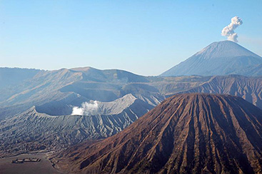

Примеры из урока: изображения и списки
Изображения
Вулкан Бономо на рассвете

Картинка-ссылка
Списки
Маркированный (ul)
Хвойные породы на территории России
- Пихта обыкновенная;
- Ель обыкновенная;
- Сосна кедровая;
- Лиственница европейская.
Нумерованный (ol)
Как почистить апельсин
- Взять апельсин.
- Уверенными движениями избавиться от кожуры.
- Отламывать дольки и поглядывать с удовольствием.
Многоуровневый (ul внутри ol)
Виды деревьев на территории России
-
Хвойные
- Пихта обыкновенная;
- Ель обыкновенная;
- Сосна кедровая;
- Лиственница европейская.
-
Лиственные
- Берёза обыкновенная;
- Липа мелколистная;
- Дуб черешчатый;
- Осина обыкновенная;
- Клён остролистный.